Visualise le résultat final en 3D temps réel pour chaque arme (glisse la souris pour faire pivoter le modèle sous tous les angles). Chaque tutoriel détaille le pipeline complet, du blockout aux finitions PBR, optimisé pour l'export en moteur de jeu (Roblox Studio, Unity, Unreal).
Déduire la géométrie 3D à partir d'une seule image ou d'un concept art sans blueprint orthogonal grâce aux règles d'échelle mécanique et au Camera Projection Mapping.
Une image 2D n'a pas de dimensions. Crée un cylindre de 3cm de diamètre (Maj+A → Cylinder) représentant la prise en main d'un poing humain. Cale la poignée de ton image sur ce cylindre (S) : toute l'arme est maintenant à l'échelle 1:1 exacte !
Ne modélise JAMAIS l'arme en un seul bloc. Découpe mentalement l'image : la lame/canon en acier plein, les plaquettes de manche en G10/bois rapportées, les vis Torx. Chaque pièce est un objet indépendant superposé.
Pour les lames : dos épais (4mm, G+Y 0.2cm), fil du tranchant effilé à 0.1mm (S+Y 0.02). Pour les crosses : épaisseur paume standard de 2.2cm avec biseau franc (Ctrl+B). Les highlights lumineux trahissent les arêtes vives.
Bascule en vue de face (Pavé 1), sélectionne tout (A) et fais U → Project from View. Branche l'image 2D sur le canal Base Color : le modèle 3D hérite instantanément à 100% des textures et marquages de la photo originale !
Modélisation d'après plan technique CAD coté 1:5 : Receiver tôle emboutie, Bois noyer, Chargeur banane 7.62mm et Piston gaz
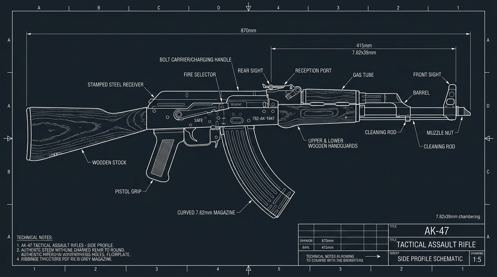
Plan Technique CAD · Schéma Écorché & Cotes 1:5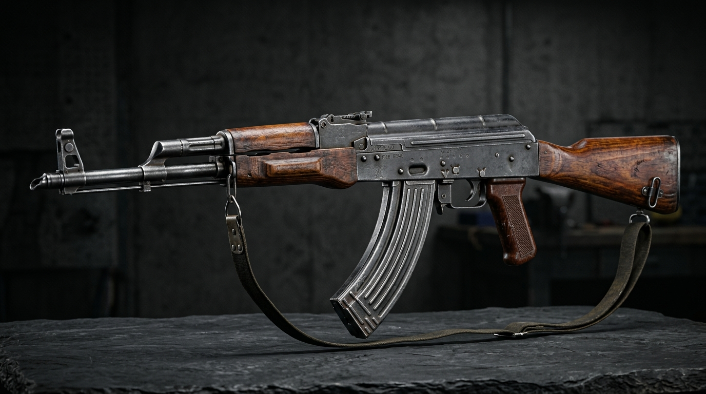
Blender 4.2 Cycles · Éclairage Studio HDRimg/ak47_2d_concept.jpg et clique sur le bouton bleu Load Reference Image.87cm dans Dimensions X. Fais un Clic Gauche sur le bord du blueprint, appuie sur la touche S (Scale), déplace la souris pour agrandir l'image jusqu'à ce que la crosse et la bouche du canon touchent pile les deux côtés du cube étalon, puis clique Clic Gauche pour valider. Supprime le cube étalon (X → Delete).4.5cm et appuie sur Entrée pour obtenir la largeur exacte de la carcasse.0.2cm pour dessiner l'épaisseur des parois en acier, puis appuie sur E (Extruder), tape -4.2cm et valide avec Entrée pour creuser le boîtier.-1.5cm puis Entrée pour forer le trou de bouche.45 pour l'orienter pile à 45°, et ajuste ses dimensions avec S pour relier le canon au tube supérieur.-45 : tu obtiens le célèbre frein de bouche biseauté de l'AKM qui dévie les gaz vers le haut.0.12cm pour faire saillir les nervures de tôle.img/ak47_2d_concept.jpg et relie le point jaune Color au point jaune Base Color du bloc Principled BSDF. Tous les marquages et nuances du dessin s'appliquent immédiatement sur la 3D !0.90 et descends Roughness à 0.28 pour les pièces d'acier bronzé. Pour le bois, règle Metallic: 0 et Roughness: 0.35.Tool liés par des objets WeldConstraint. Tu pourras animer l'éjection du chargeur courbé et le réarmement massif de l'AK-47 !
Modélisation d'après plan technique Koshirae coté : Lame Nagasa diamant, Garde Tsuba, Collet Habaki et Tressage Tsuka-ito
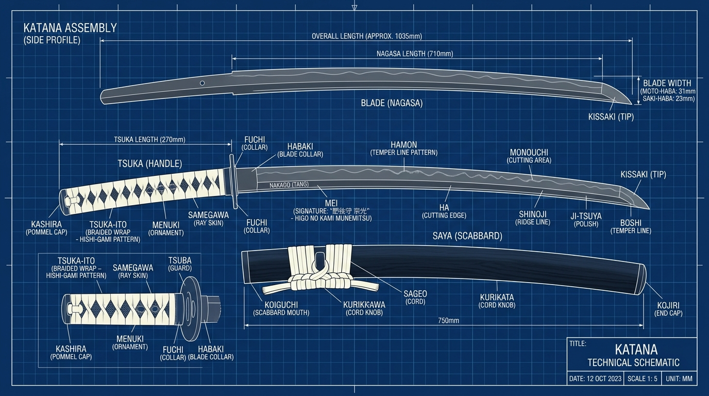
Plan Technique CAD · Vues Cotées & Assemblage Koshirae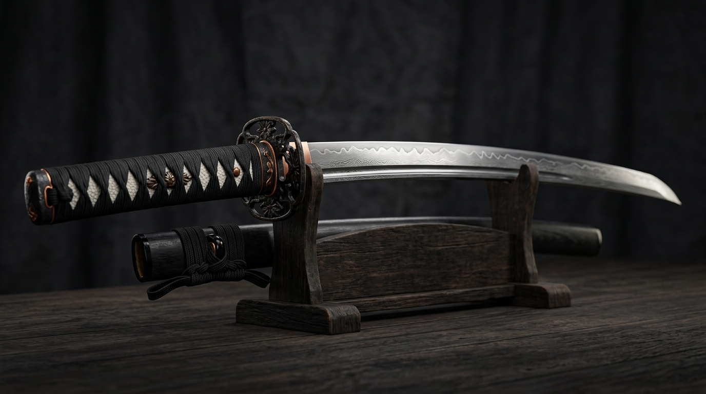
Blender 4.2 Cycles · Éclairage Studio HDRimg/katana_2d_concept.jpg et clique sur le bouton bleu en bas à droite Load Reference Image.103.5cm puis Entrée. Fais un Clic Gauche sur le bord de l'image du blueprint pour la sélectionner, appuie sur la touche S (Scale / Redimensionner), glisse ta souris pour agrandir l'image jusqu'à ce que le bout du pommeau Kashira à gauche et la pointe Kissaki à droite touchent exactement les deux extrémités du cube étalon. Fais un Clic Gauche pour valider. Clique Gauche sur le cube étalon et supprime-le (X → Delete).0.8 puis Entrée) pour qu'elle puisse se loger dans la poignée en bois.0.02 et appuie sur Entrée. L'épaisseur du fil se resserre à moins de 0.2mm, créant un tranchant prêt pour la découpe.1.4cm pour lui donner l'épaisseur de la bague en laiton.0.2cm puis appuie sur la touche X et choisis Faces pour vider l'intérieur. Relie les tranches intérieures avec Alt + Clic Gauche sur les bords puis Edge → Bridge Edge Loops. Le Habaki enserre maintenant fermement la lame.-0.04cm et valide avec Entrée pour graver les stries traditionnelles faites à la lime pour retenir le fourreau.1.25 et valide avec Entrée pour transformer le cercle en un bel ovale vertical (hauteur 8.5cm, largeur 6.8cm).0.90 pour créer le léger rétrécissement central qui épouse le creux de la paume.0.75 et valide : la poignée prend sa section ovale caractéristique des armes de coupe japonaises.14. Dans Relative Offset, règle la valeur X pour que chaque losange se colle parfaitement au suivant. En 1 seconde, tes 14 croisements de soie noire recouvrent toute la longueur de la poignée !img/katana_2d_concept.jpg. Relie le point jaune Color au point jaune Base Color du bloc Principled BSDF. La ligne de trempe ondulée Hamon, les gravures de la Tsuba et le tressage Tsuka-ito se peignent instantanément sur votre modèle 3D !0.95 et descends Roughness à 0.10 sur la lame pour obtenir un reflet miroir sur le tranchant Ha et un reflet satiné sur la crête Shinogi. Sur le tressage en soie Tsuka-ito, règle Metallic: 0.0 et Roughness: 0.85 pour un rendu textile mat réaliste.Modélisation d'après plan technique CAD coté 1:1 : Carcasse polymère ergonomique, Culasse usinée, Canon flottant et Chargeur 17 coups
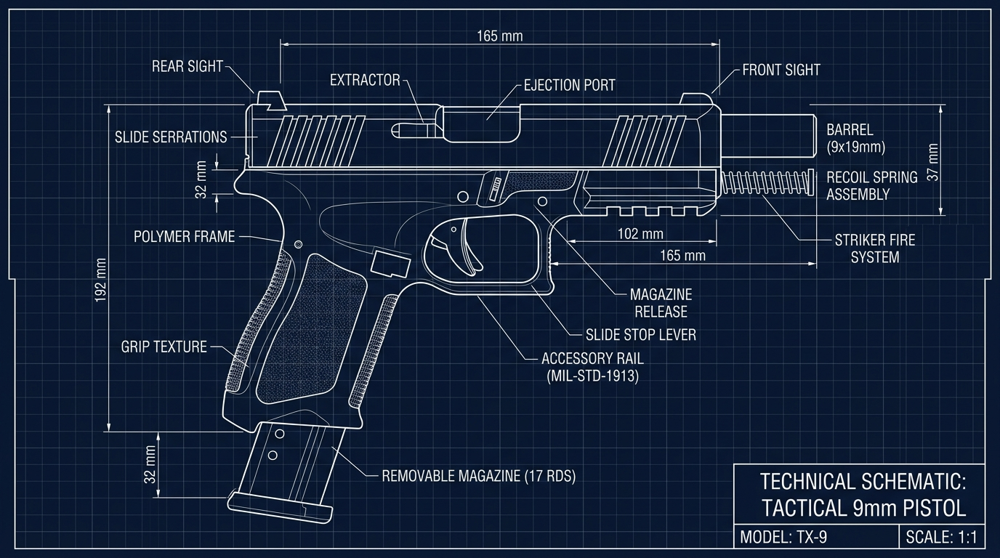
Plan Technique CAD · Schéma Mécanique Échelle 1:1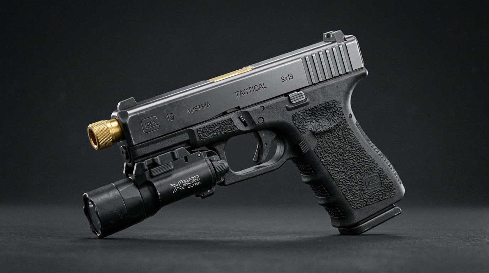
Blender 4.2 Cycles · Éclairage Studio HDRimg/pistolet_2d_concept.jpg et clique sur le bouton bleu en bas à droite Load Reference Image.16.5cm dans Dimensions X et 19.2cm dans Dimensions Z. Fais un Clic Gauche sur le bord du blueprint, appuie sur S (Scale / Redimensionner), glisse ta souris pour ajuster l'image jusqu'à ce que la culasse et le talon de la poignée touchent exactement les bordures du cube étalon. Fais un Clic Gauche pour valider. Supprime le cube étalon (X → Delete).3.0cm et appuie sur Entrée. Reviens en vue Pavé 1.-21 et appuie sur Entrée pour appliquer l'inclinaison ergonomique exacte à 111° (angle de tir instinctif naturel du schéma TX-9).0.25cm pour délimiter les parois de polymère, puis appuie sur E et pousse ta souris vers le haut à l'intérieur du manche sur 9cm pour créer le couloir creux qui recevra le chargeur.-0.2cm et valide avec Entrée pour tailler les 3 encoches standard d'attache de laser ou lampe tactique.2.8cm pour la largeur de culasse.-0.12cm et valide avec Entrée pour creuser les rainures antidérapantes de préhension.0.1cm pour figurer l'épaisseur de l'acier forgé, puis appuie sur E (Extruder), tape -2.0cm et valide avec Entrée pour creuser le trou d'alésage de sortie de balle.img/pistolet_2d_concept.jpg. Relie le point jaune Color au point jaune Base Color du Principled BSDF. Les marquages laser 'TX-9 9x19mm', le logo et les ombrages techniques s'appliquent immédiatement sur la 3D !0.90 et descends Roughness à 0.28 pour un éclat semi-brillant d'arme de service.Modélisation d'après plan technique d'armurerie historique : Lame losange XVa, Gouttière d'allègement, Garde forgée et Pommeau à disque
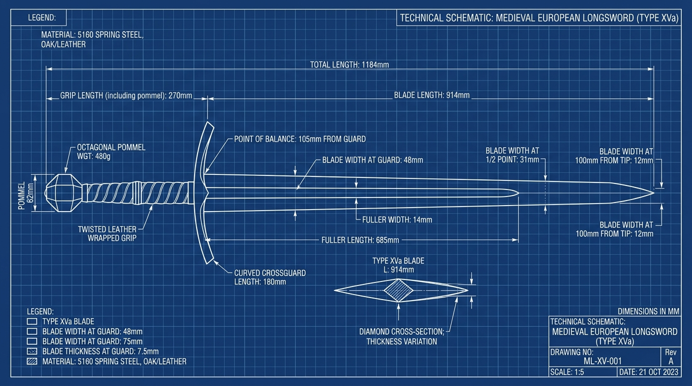
Plan Technique CAD · Section Diamant & Cotes Historiques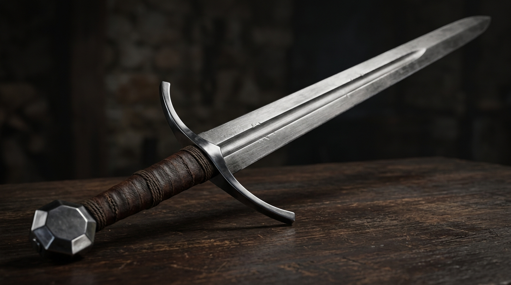
Blender 4.2 Cycles · Éclairage Studio HDRimg/epee_2d_concept.jpg et clique sur le bouton bleu en bas à droite Load Reference Image.118.4cm puis Entrée. Fais un Clic Gauche sur le bord de l'image du blueprint, appuie sur la touche S (Scale / Redimensionner), glisse ta souris pour faire grandir l'image jusqu'à ce que la pointe d'estoc à droite et le sommet du pommeau à gauche touchent pile les deux côtés du cube étalon. Fais un Clic Gauche pour valider. Clique Gauche sur le cube étalon et supprime-le (X → Delete).0.65 et appuie sur Entrée pour rétrécir la lame jusqu'à la cote exacte du blueprint : BLADE WIDTH AT 1/2 POINT: 31mm.0.40 et valide pour atteindre la largeur prescrite : BLADE WIDTH AT 100mm FROM TIP: 12mm.0.08cm pour adoucir les berges de la gorge, puis appuie sur Alt + E → Extrude Faces Along Normals, tape -0.12cm et valide avec Entrée. Cette gorge permet d'alléger la lame de 250g tout en conservant une rigidité mécanique parfaite aux chocs.0.03 et appuie sur Entrée pour pincer le fil d'acier à moins de 0.2mm d'épaisseur.0.08cm et valide avec Entrée pour faire saillir en relief les cordons de lin ligaturés sous la peau de cuir brut.img/epee_2d_concept.jpg. Relie le point jaune Color au point jaune Base Color du Principled BSDF. Les reflets d'acier forgé, la gouttière sombre et la texture du plan technique se peignent immédiatement sur la 3D !0.95 et descends Roughness à 0.12 pour un éclat tranchant miroir. Sur le manche en cuir ficelé, règle Metallic: 0.0 et Roughness: 0.68 pour un rendu de cuir patiné chaleureux.Modélisation d'après plan technique CAD : Manche d'ébène, Langets rivetés, Tête à 16 ergots pyramidaux, Bec de corbin et Pointe
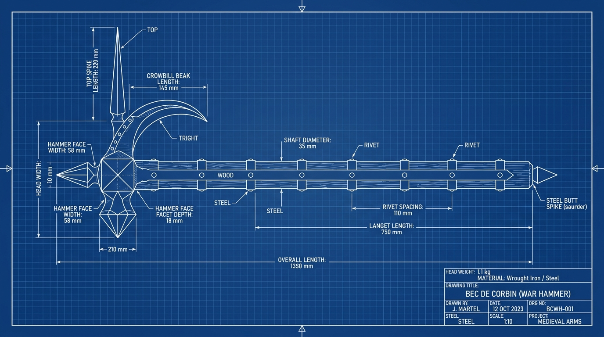
Plan Technique CAD · Bec de Corbin & Tête Pyramidale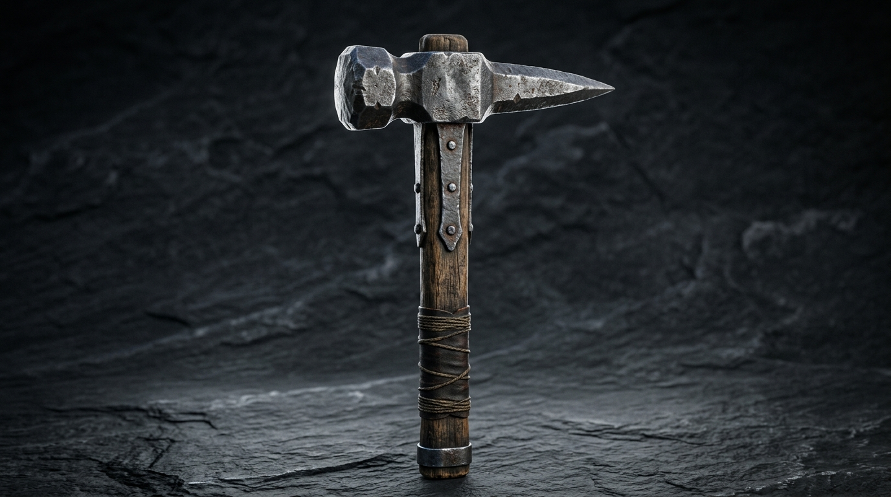
Blender 4.2 Cycles · Éclairage Studio HDRimg/marteau_2d_concept.jpg et clique sur le bouton bleu en bas à droite Load Reference Image.135cm puis Entrée. Fais un Clic Gauche sur le bord de l'image du blueprint, appuie sur la touche S (Scale / Redimensionner), glisse ta souris pour agrandir l'image jusqu'à ce que la pointe arrière du manche à droite et la face du marteau à gauche touchent exactement les deux extrémités du cube étalon. Fais un Clic Gauche pour valider. Clique Gauche sur le cube étalon et supprime-le (X → Delete).0 et appuie sur Entrée. Appuie sur M → At Center pour sculpter l'ergot brise-roche qui servait à ficher le marteau dans la terre ou à porter un coup d'estoc arrière surprise.0 et appuie sur Entrée. Les 16 faces convergent instantanément en 16 pointes pyramidales acérées capables de disloquer les plaques d'armure médiévales !-12 pour amorcer la courbure descendante, et rétrécis légèrement avec S 0.85. Répète cette manipulation (E de 3.5cm puis R -12° puis S 0.85) 4 fois consécutives en superposant fidèlement tes sommets sur le dessin du bec d'oiseau du blueprint.0.1 pour effiler la pointe en un crochet pénétrant ultra-acéré qui agissait comme un redoutable ouvre-boîte médiéval face aux heaumes fermés.img/marteau_2d_concept.jpg. Relie le point jaune Color au point jaune Base Color du Principled BSDF. Les reflets de forge, le grain du bois et les nuances du plan CAD s'impriment immédiatement sur la géométrie 3D !0.90 et règle Roughness: 0.25 pour faire ressortir les marbrures feuilletées du métal forgé. Sur le manche en bois, règle Metallic: 0.0 et Roughness: 0.55.ParticleEmitter d'étincelles métalliques déclenché au point d'impact de la face de frappe du marteau !
Modélisation d'après plan technique scandinave : Manche en frêne galbé, Douille forgée, Fer barbu, Tranchant biconvexe et Runes Futhark
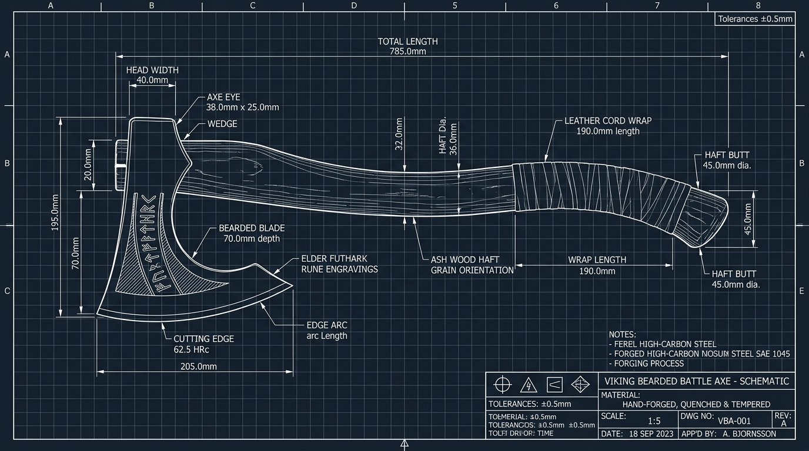
Plan Technique CAD · Fer Barbu & Runes Futhark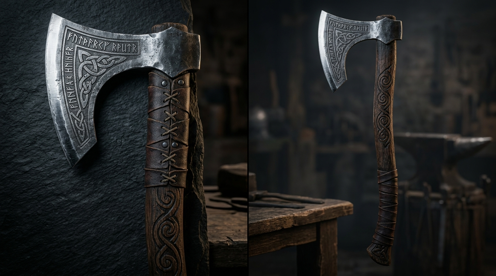
Blender 4.2 Cycles · Éclairage Studio HDRimg/hache_2d_concept.jpg et clique sur le bouton bleu en bas à droite Load Reference Image.78.5cm puis Entrée. Fais un Clic Gauche sur le bord de l'image du blueprint, appuie sur la touche S (Scale / Redimensionner), glisse ta souris pour faire correspondre le talon du manche à droite et le nez du fer à gauche pile avec les deux extrémités du cube étalon. Clique Clic Gauche pour valider. Supprime le cube étalon (X → Delete).0.1cm pour figurer l'épaisseur du cuir brut. Avec Ctrl+R, trace des diagonales entrecroisées figurant le ficelage de cuir de cerf trempé qui garantissait une prise en main infaillible sous la pluie ou le sang.0.4 pour amincir la matière en biseau forgé vers le fil de coupe.0.03 et appuie sur Entrée. La tranche d'acier se resserre à moins de 0.2mm d'épaisseur pour former le biseau coupant comme un rasoir.-0.08cm et valide avec Entrée pour tailler les gorges profondes de la gravure.img/hache_2d_concept.jpg. Relie le point jaune Color au point jaune Base Color du Principled BSDF. La texture d'acier martelé au billot, le grain de bois de frêne et les runes dorées s'appliquent immédiatement sur la 3D !Handle avec l'axe Z orienté vers l'avant de la lame de hache pour un maniement à deux mains parfait dans Roblox Studio !
Modélisation d'après plan technique 3 vues : Lame à double tranchant, Ailes de garde pourpre, Poignée ligaturée et Pommeau
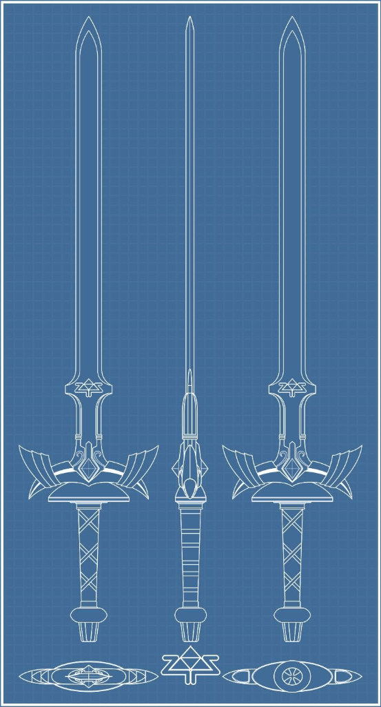
Blueprint Orthogonal CAD · Vues Face / Profil / Coupes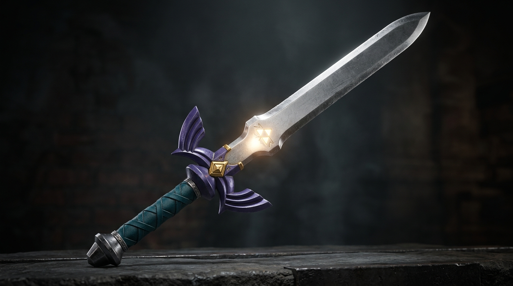
Blender 4.2 Cycles · Éclairage Studio HDRimg/blueprint_master_sword.png et clique sur le bouton bleu en bas à droite Load Reference Image.0.50. Coche la case Only in Orthographic pour masquer le blueprint quand tu tournes la caméra en 3D. Avec la touche G, déplace l'image pour que la ligne médiane verticale de la lame de face se superpose au millimètre près sur l'axe bleu vertical Z (X=0).0.6cm et valide avec Entrée pour faire saillir la crête centrale.0.04 et valide avec Entrée. La lame prend sa section en losange parfaite avec deux faces tranchantes biseautées de chaque côté sans déformer le profil.-0.06cm et valide pour graver le sceau en creux. Assigne à ces faces un matériau doré phosphorescent émissif (Emission: 4.0).45 pour l'orienter en losange sur sa pointe.1.4 pour épouser le diamant central du blueprint. En vue latérale (Pavé 3), aplatis l'épaisseur à 1.2cm (S + Y 0.5).0.06cm) pour faire saillir les lanières de cuir vert forêt en relief.-0.12cm) pour sculpter les gorges cannelées visibles sur le plan technique.img/blueprint_master_sword.png. Relie le point jaune Color au point jaune Base Color du Principled BSDF. Les nuances royales, le pourpre des ailes et l'or de la Triforce se projettent directement sur votre géométrie 3D !0.98 et descends Roughness à 0.08 pour un reflet miroir d'épée céleste. Sur les ailes de garde pourpres, règle Metallic: 0.65 et Roughness: 0.30 pour un émail laqué brillant. Sur la gemme et la Triforce, règle Metallic: 0.95, Roughness: 0.15 et couleur or riche (#FFD700). Sur la poignée, règle Metallic: 0.0 et Roughness: 0.72.PointLight (couleur cyan/or #5cd6ff) et un Trail lumineux au tranchant de la lame pour reproduire le célèbre rayon d'énergie céleste de l'Épée de Légende lors des attaques à pleine santé !
Modélisation d'après référence 2D unique : Lame Hawkbill courbe, Plaquettes G10, Anneau de rétention et Vis Torx
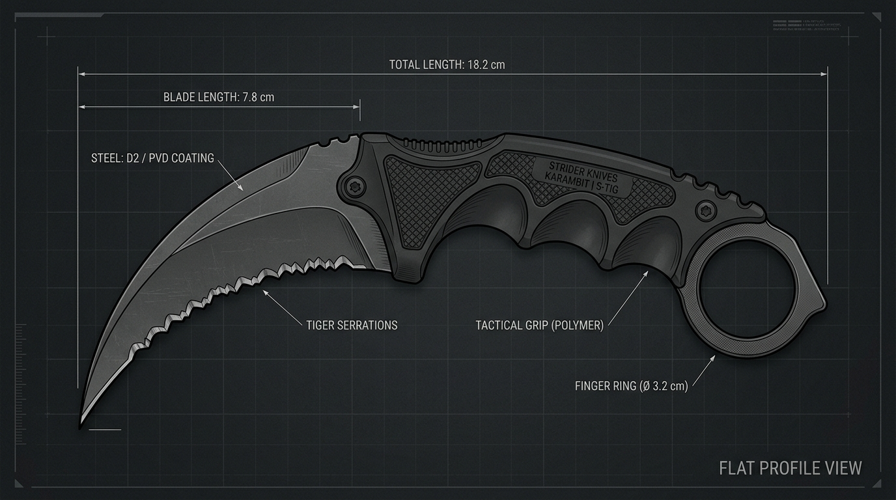
Image 2D Plate Unique · Vue de profil sans épaisseur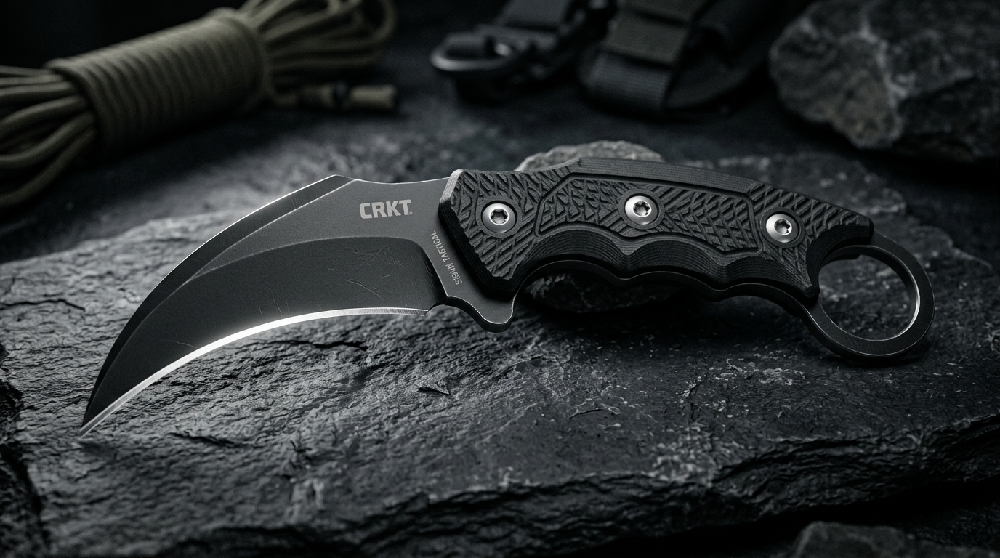
Blender 4.2 Cycles · Éclairage Studio HDRimg/karambit_2d_concept.jpg et clique sur le bouton bleu en bas à droite Load Reference Image.18.2cm puis Entrée. Fais un Clic Gauche sur le bord de l'image, appuie sur la touche S (Scale / Redimensionner), glisse ta souris pour faire correspondre la pointe de la griffe à gauche et l'anneau à droite pile avec les deux extrémités du cube étalon. Clique Clic Gauche pour valider. Supprime le cube étalon (X → Delete).0.4cm et valide avec Entrée. Tu obtiens la plaque d'acier trempé pleine soie (Full-Tang) de 4mm d'épaisseur qui traverse toute l'arme.0.05 et valide avec Entrée. Le dos reste épais (4mm pour la rigidité), tandis que le tranchant devient fin comme un scalpel.img/karambit_2d_concept.jpg. Relie le point jaune Color au point jaune Base Color du Principled BSDF. Le marquage laser 'STRIDER KNIVES KARAMBIT | S-TIG', la texture G10 texturée et le dégradé PVD noir s'appliquent immédiatement sur la 3D !0.92 et règle Roughness: 0.28. Sur les plaquettes de manche en composite G10 noir, règle Metallic: 0.05 et Roughness: 0.80 avec un micro-relief de quadrillage antidérapant.Tool Roblox Studio avec RequiresHandle = true.{kind=link}
{kind=link}
{kind=link}
{kind=link}
{kind=link}
{kind=link}
{kind=link}
{kind=link}